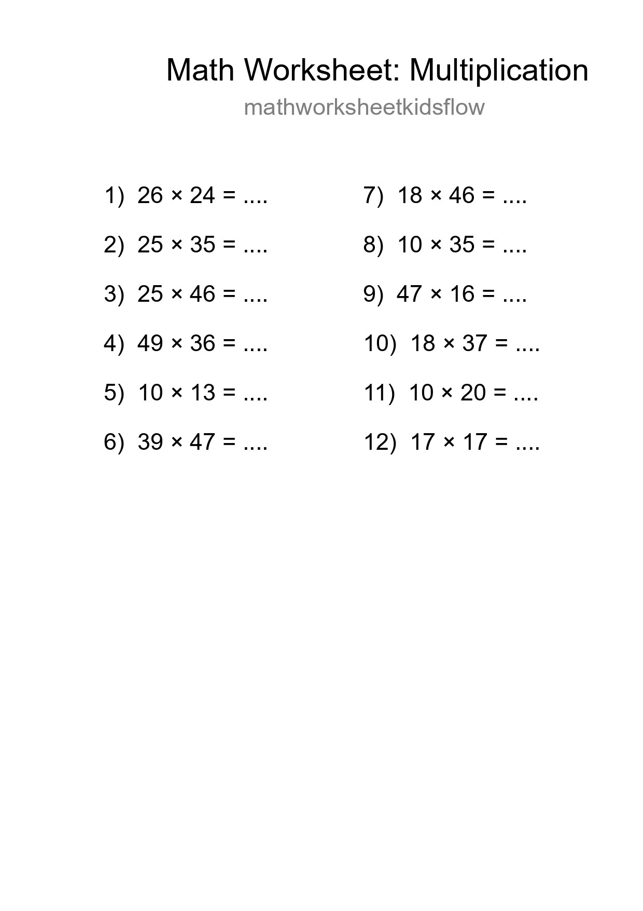
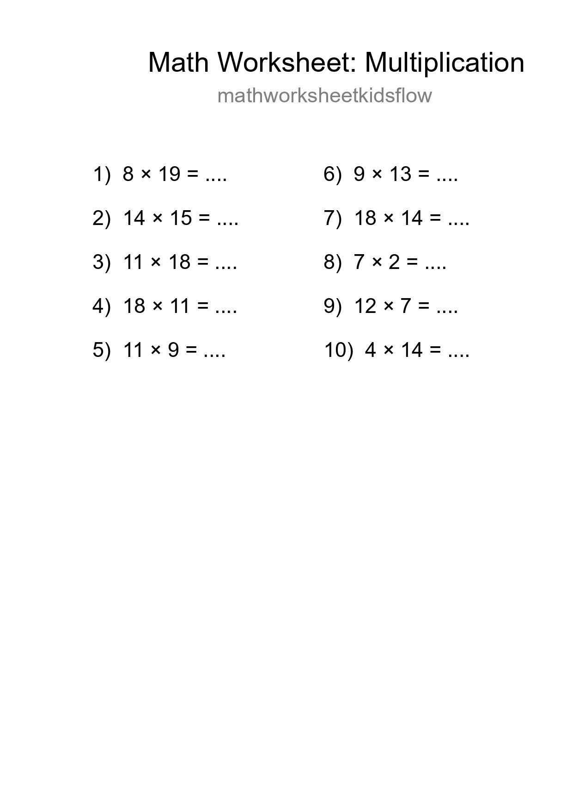
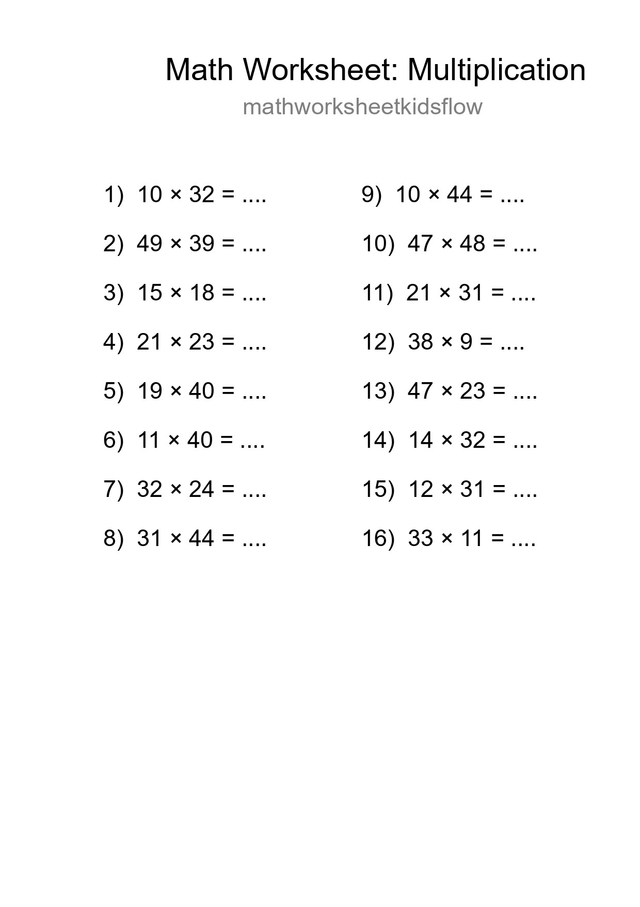
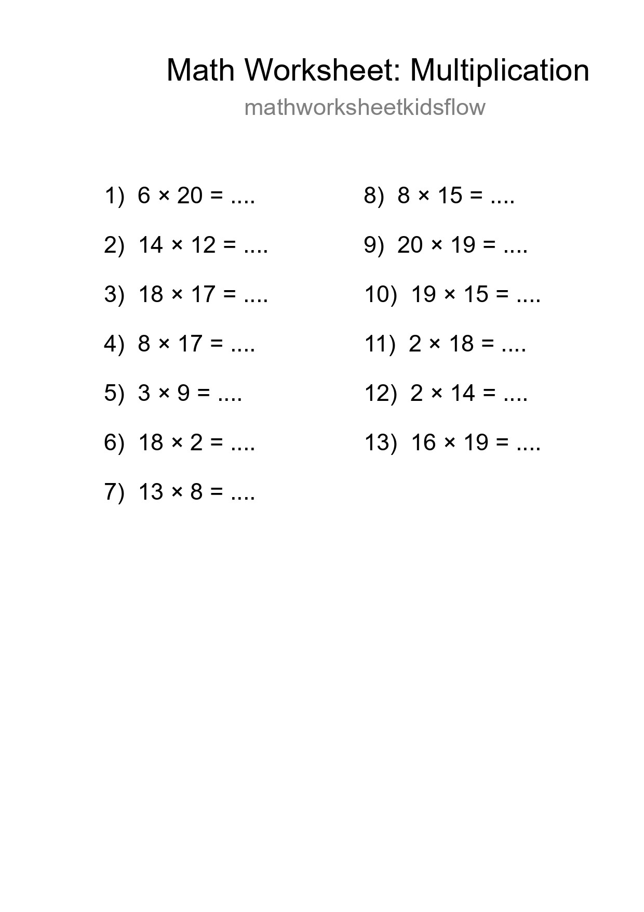
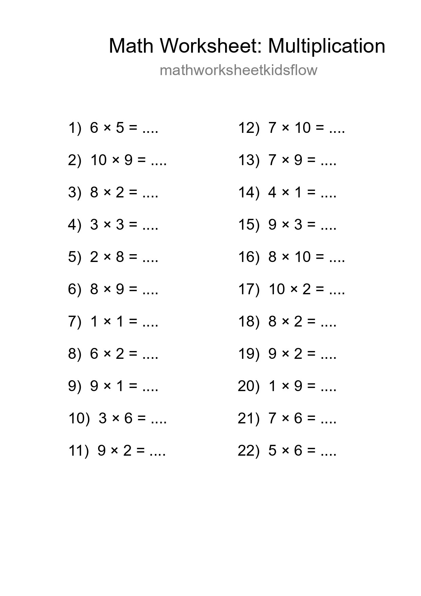
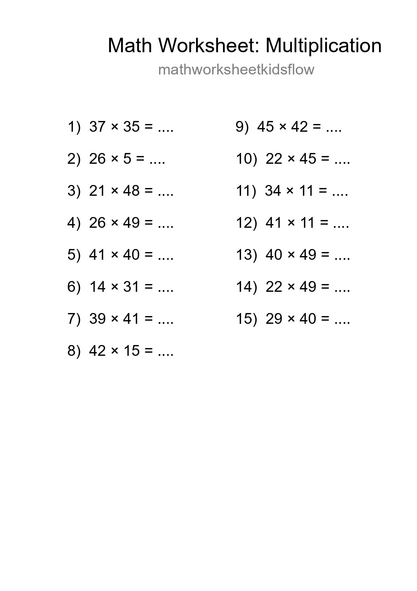
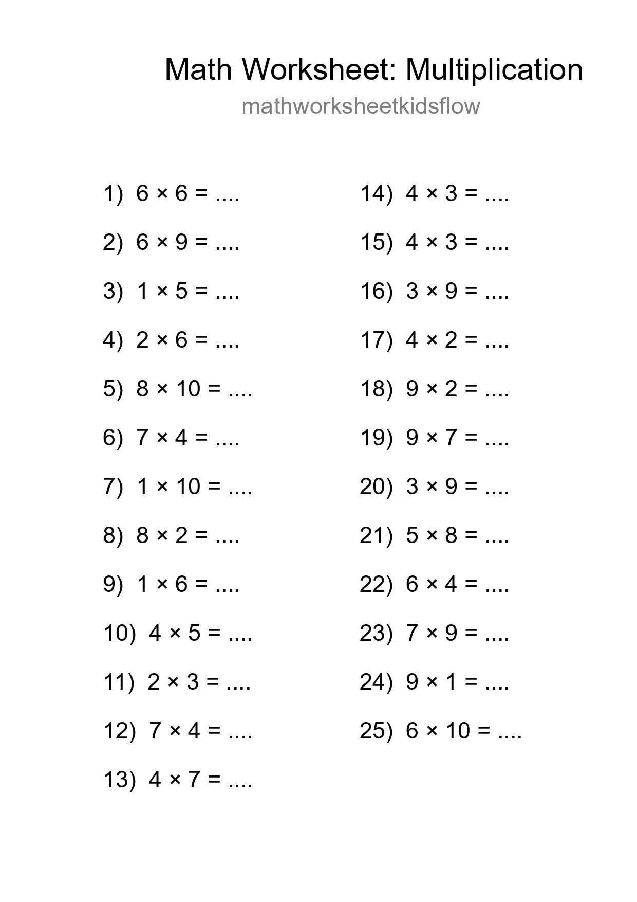
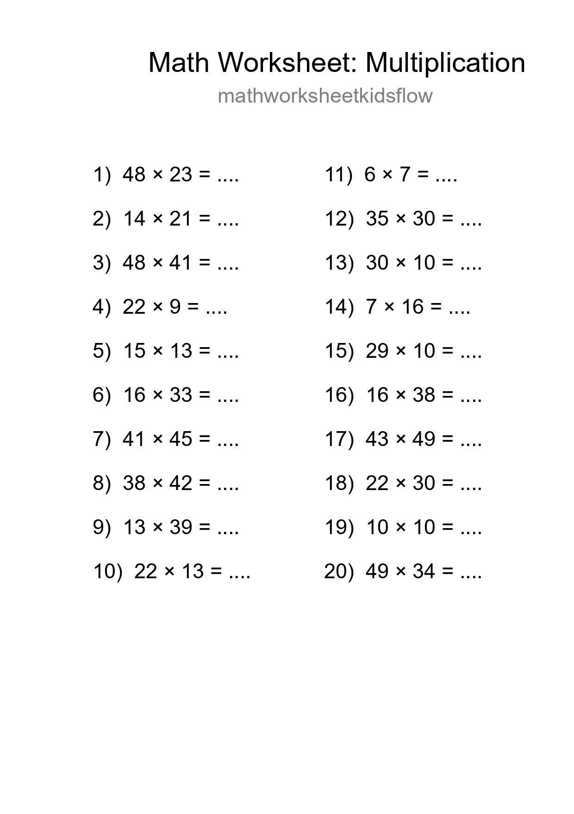

Free 12 Multiplication Math Worksheet For Grade 2 With Answers - Part 8

Printable Free 10 Multiplication Math Worksheet For Grade 2 - Part 20

Free 16 Multiplication Math Worksheet For Grade 2 - Part 32

Grade 2 Multiplication Practice Worksheet (13 Problems) - Part 44

Free 22 Multiplication Math Worksheet For Grade 1 With Answers - Part 56

Free 15 Multiplication Math Worksheet For Grade 2 With Answers - Part 68

Free 25 Multiplication Math Worksheet For Grade 1 - Part 80

Free 20 Multiplication Math Worksheet For Grade 2 With Answers - Part 92

Free 11 Multiplication Math Worksheet For Grade 2 With Answers - Part 104

Printable Free 30 Multiplication Math Worksheet For Grade 1 - Part 116

Free 13 Multiplication Math Worksheet For Grade 2 With Answers - Part 128

Free 28 Multiplication Math Worksheet For Grade 2 - Part 140

Printable Free 28 Multiplication Math Worksheet For Grade 2 - Part 152

Free 28 Multiplication Math Worksheet For Grade 2 With Answers - Part 164

Free 13 Multiplication Math Worksheet For Grade 2 With Answers - Part 176

Printable Free 21 Multiplication Math Worksheet For Grade 2 - Part 188